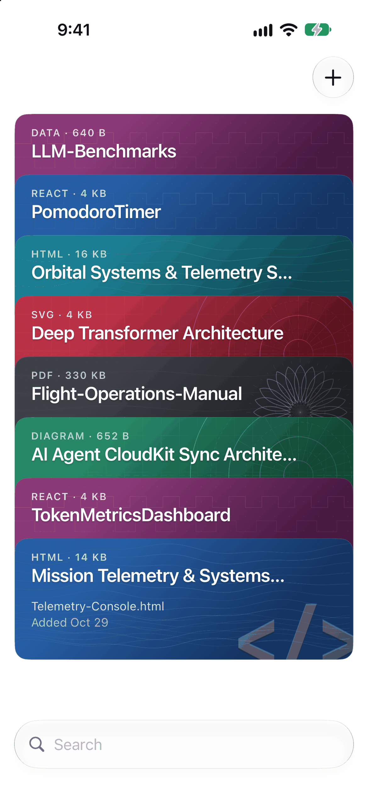

The folio for what AI assistants build for you.
Dashboards, trackers, calculators and mini apps made by AI assistants usually come as a single .html file. Artifact Viewer keeps them in one folio and opens them full screen, offline, straight from the Files app.

Available on the App Store📥 Save in one tap
Download a page, tap Share, and it lands in your folio. Or choose "Open in Artifact Viewer" from the Files app.
🗂️ One folio, not a Downloads pile
Pages and apps sit in a swipeable card stack with previews, so you can find the one you want at a glance.
🖥️ Full screen, fully working
Files shows an .html file as code and Safari can't open it well from local storage. Here it runs full screen, with its scripts and saved data, as it was built.
🔗 Pages that open PDFs
Put a page and the PDFs it links to in one folder. Tap the link in the page and the PDF opens over it, ready to read.
✈️ Works without a connection
Anything a page loads from the internet is saved the first time you open it, so it still runs on a plane.
🔒 Private by design
Syncs between your iPhone and iPad through your own iCloud. No ads, no analytics, no accounts.